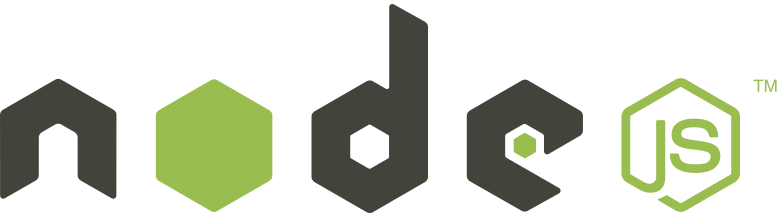

Speeding Up Application Status Updates
Mike Cantelon
Our apps provide (kind of) real-time updates
-
AtoM: background job status, etc.
-
Archivematica: SIP/AIP processing status, etc.
-
Binder: can't remember, but probably something!
We currently use AJAX polling
AJAX polling cycle
AJAX polling is slow
- Laggy: done at an interval
- Verbose:
- HTTP protocol adds overhead data for each
request/response
- Entire state often sent when updating
(big problem with Archivematica dashboard)
- Noisy: most responses return no new info
Improving AJAX polling
-
Add ability to request a "diff" rather
than entire state
-
Add checksum of the entire state to "diff"
responses
An alternative
-
Websocket is a bidirectional protocal supported by
modern browsers
-
Eliminates need for polling: server can "push" data
-
Lightweight protocol, little overhead

Adding Websocket updating
-
Our app backends are written in two languages (Python and
PHP)
-
App backend needs to keep connection open to WebSocket client
-
PHP apps generally don't share state between requests
-
TLDR: it seems like it'd be a pain
Idea: REST (HTTP) to Websocket gateway
Node.js'd be well-suited for this (or maybe Go?)
-
Easy to make REST APIs (Express, Hapi)
-
Easy Websocket (Socket.io)

Dreamland
-
Could add high-level dashboard for gauging activity of
multiple products/installations
Downside of gateway approach
-
Another technical requirement (Node.js or Go)
-
Another service that needs to be monitored
-
More code we need to write/maintain if nothing
suitable already exists